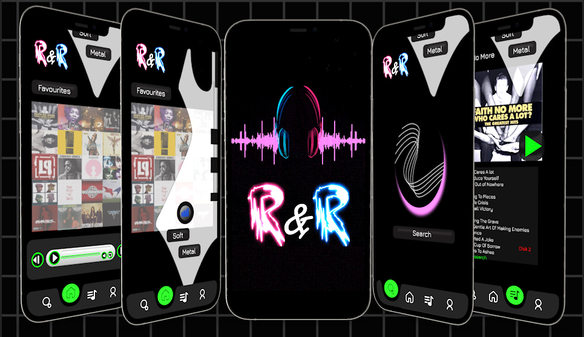
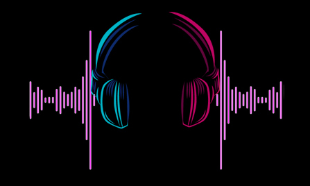

This design project focused on developing a mobile music application. The real goal for me was to create an engaging user friendly interface that allows users to easily discover, play and organise their music enhancing their overall listening experience based on my favourite genre - Rock. The project aimed to balance an aesthetic appeal based on that particular theme emphasising smooth navigation.
The real problem with this project was to create something that is keeping up with modern trends in UI while leaning to a rock & roll theme. To manage this problem I researched into a lot of Grunge/ Pop Rock imagery and tried to find a nice balance of appropriate graphics and fonts that didn’t give the dark vibe that unfortunately comes hand in hand with this type of music. The target audience in this case was very easy, I knew it was an application themed around my preferred style of music so I approached this design process on something I would like to use.
My role was to create this application from sketches on layouts, creating low fi to hi fidelity wireframes right through to component, graphic creation, fonts and colour choice to create the best flow possible. Most modern UI’s in music apps are very similar but I feel I achieved an original concept while keeping up with the trends. The real constraints with this project was the time frame. With More time I feel this design could have been improved but considering it was a 6 week project I was happy with the outcome. My process was very simple, research modern applications, sketch possible graphics and elements Id like. then in Figma I test different layouts to see which worked best, trial and error. With this project I learned the value of creating wireframes. I always jumped straight into the final design and went with it; but learning and conceptualising the ideas first proved to be very benificial with the time constraints

For more on the developement click the image above.